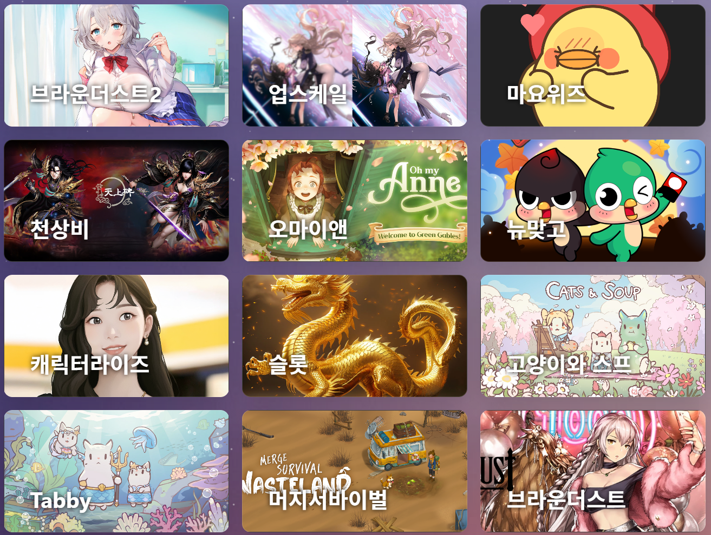
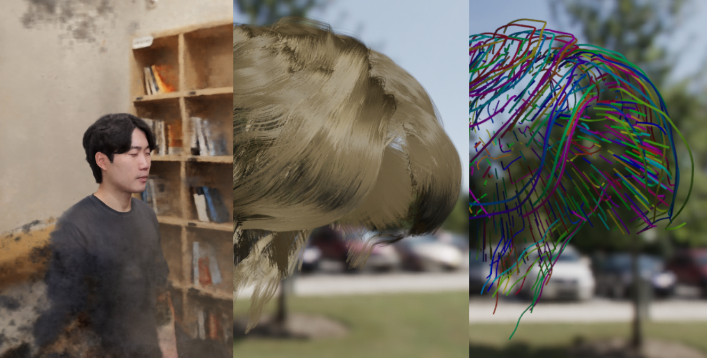
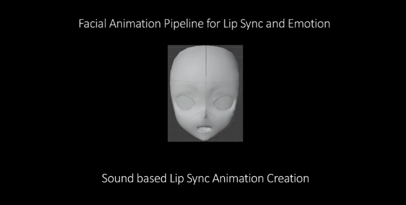
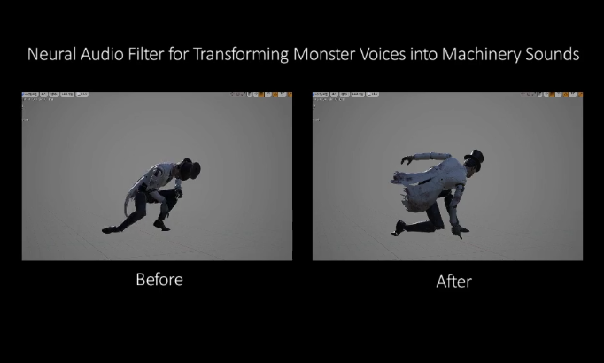
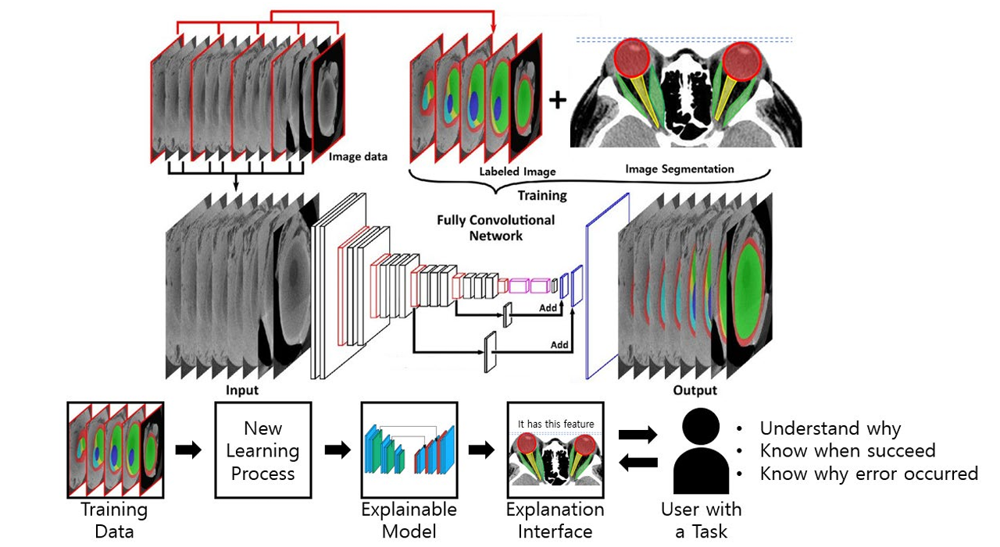

Decoupled Reprojection Consistency for Diagnosing 3D Gaussian Splatting Failures
Eurographics 2026 Poster
I am an ML engineer with industry experience in game production and AI-driven content pipelines. My work lies at the intersection of computer graphics and machine learning, with a focus on inverse rendering, neural 3D representations, and neural relighting. I am particularly interested in research collaboration and internship opportunities in computer graphics and vision.
I received my M.S. in Computer Science from Chung-Ang University, where I worked in the Automated Machine Learning Lab on a range of machine learning topics.
I was credited on Lies of P (2023), an AAA title developed by NEOWIZ.
Eurographics 2026 Poster

Neowiz, Jan 2024 - Present
An internal generative image service for controllable, title-specific artwork creation across multiple game projects.

Neowiz, Apr 2024 - Nov 2024
A production-oriented pipeline for converting dense reconstructed hair into editable guide-hair models.

Neowiz, Aug 2022 - Oct 2022
An automated facial animation pipeline that generated lip-sync and emotional expressions from voice and dialogue scripts.

Neowiz, Jun 2021 - Oct 2022
Conducted GAN-based domain transfer to convert monster voices into mechanical sounds; applied in Lies of P.

National Research Foundation of Korea, Sep 2018 - Oct 2019
Conducted 3D volumetric data classification using 3D convolutional neural networks, achieving high accuracy in multi-class prediction tasks.
I draw inspiration and motivation from visual things. Visual computing and painting are how I give form to my reflections.